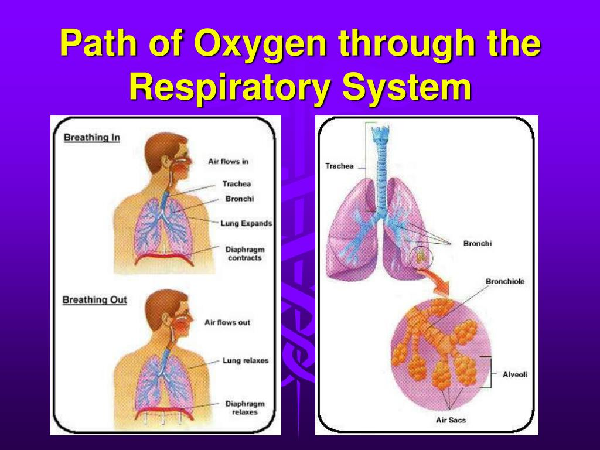
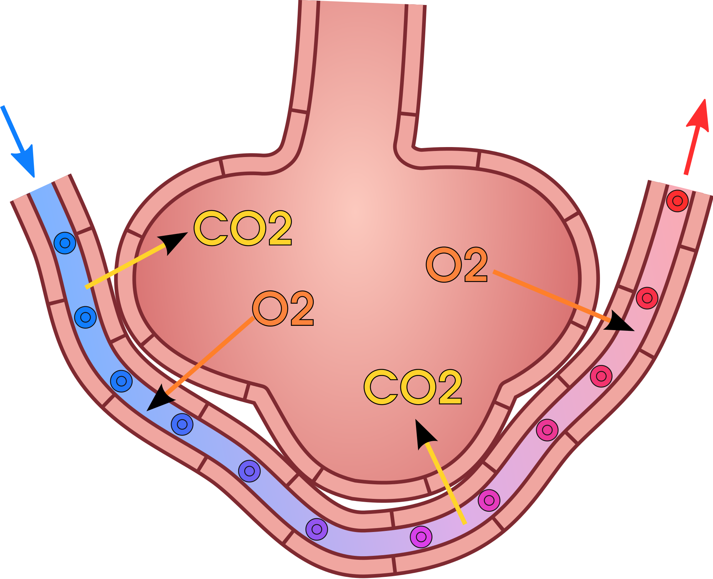
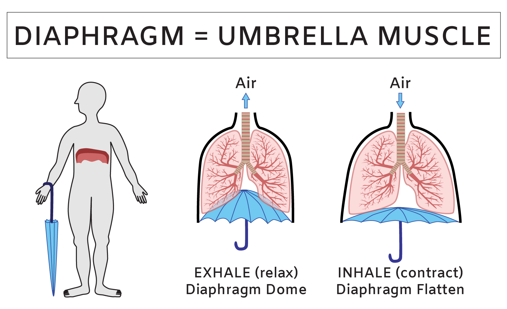

The oxygen molecule's journey begins when you inhale and the molecules pass through the nasal cavity and then goes into the epiglotis. The epiglotis guides the oxygen into the trachea past the larynx. Oxygen then travels into the lungs and then goes into the bronchi. The oxygen goes through the bronchi into the bronchioles, where it then goes into the alveoli and performs gas exchange, where the oxygen performs diffusion through the alveolus' wall into the bloodstream, where it binds to red blood cells and transports the oxygen across your whole body. The CO2 then diffuses out of the bloodstream, into the alveolus, and then out of your body. The diaphragm and other respiratory muscles aid in inhaling oxygen from the environment by contracting and flattening when you inhale, which causes a vacuum to form in your lungs, which pulls in oxygen. They also do this in reverse, pulling CO2 out of your lungs when you exhale.
  